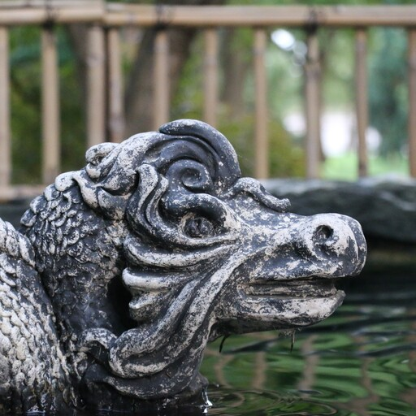
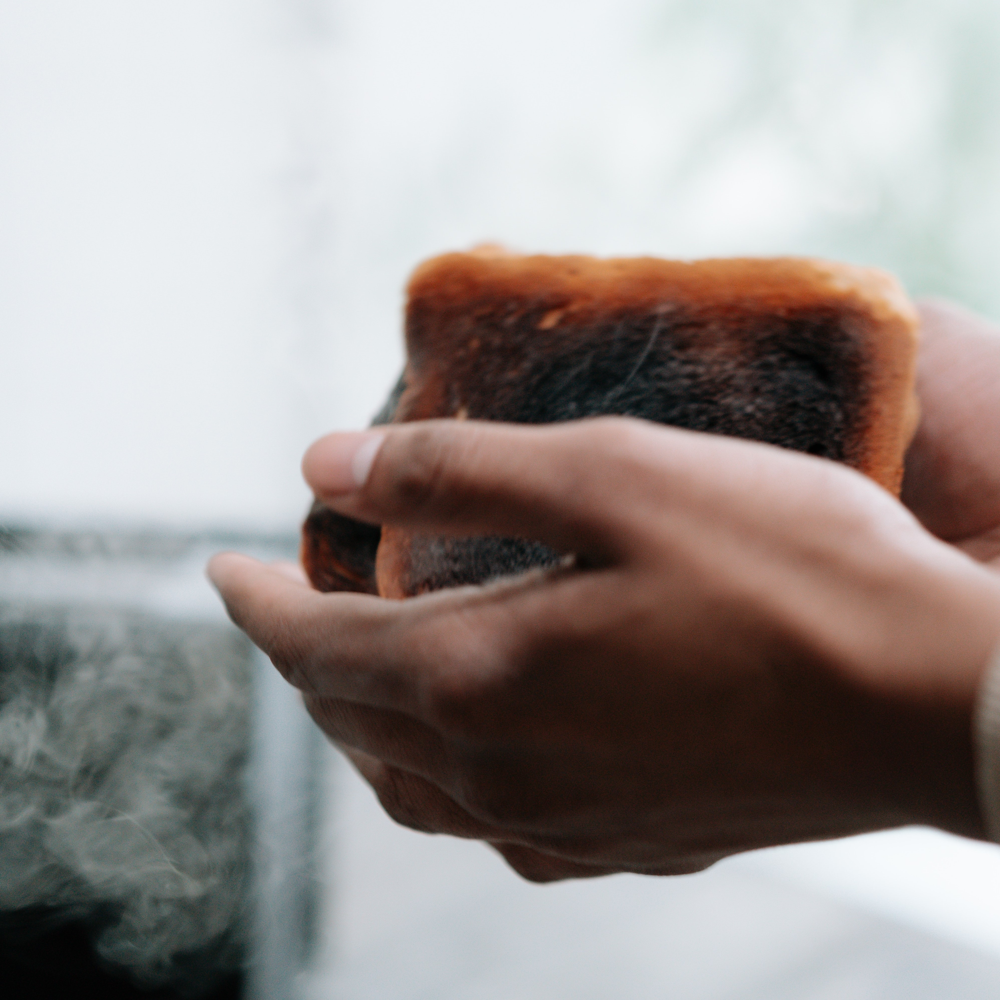
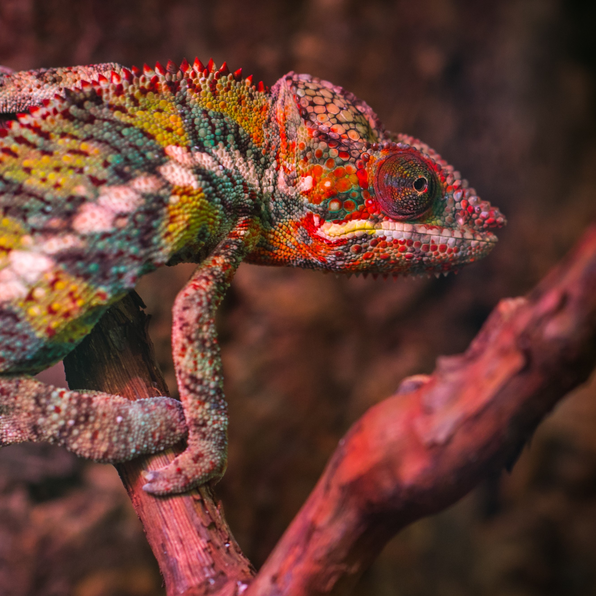
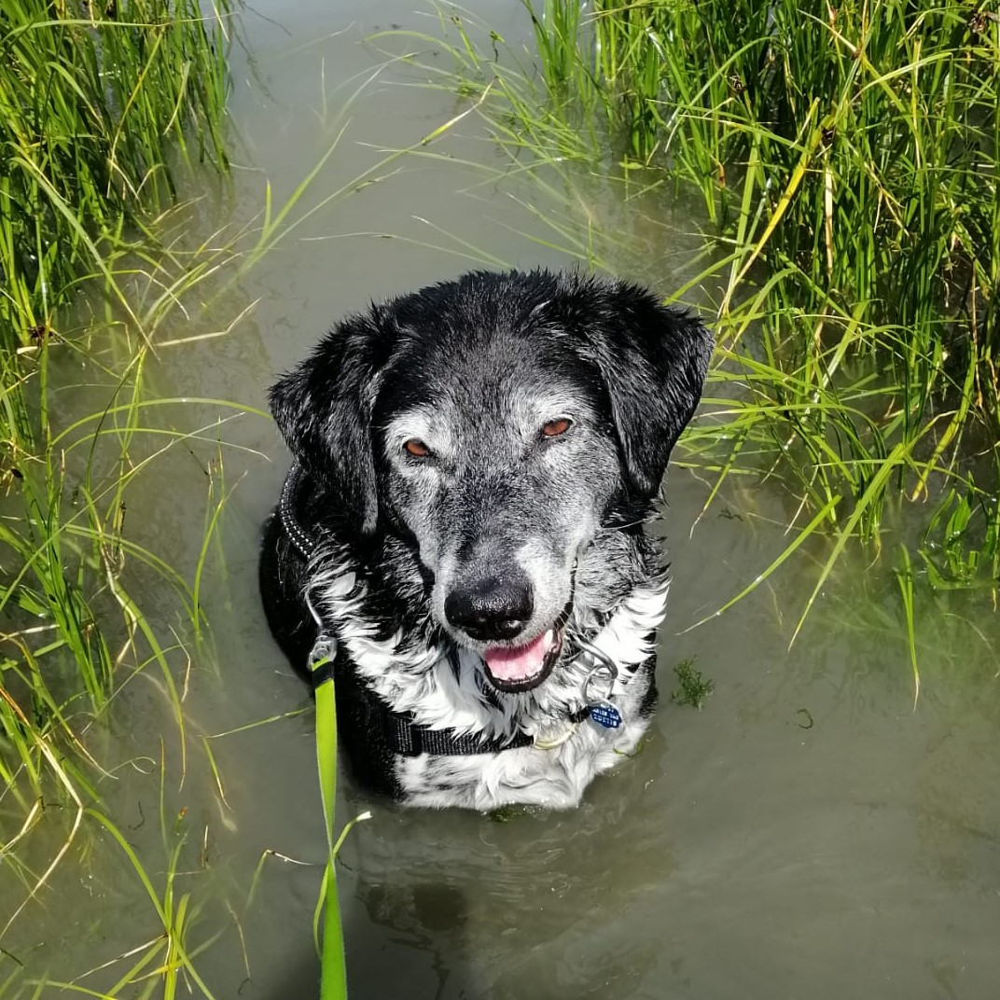
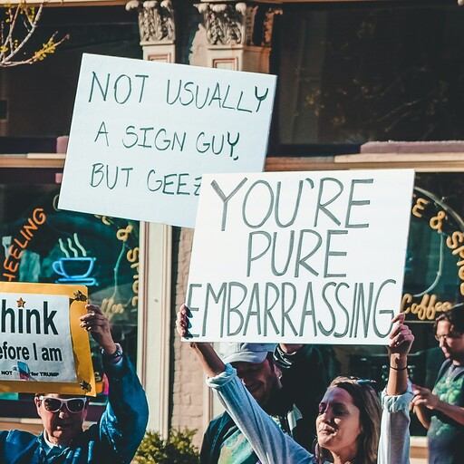

All images on this page are (unless specified) from Pexels
Images, which means they are all licensed to be used and
shared legally.
Lambton Entertainment Founded!
On the 78th of Febtober, 2021, Lambton Entertainment was
officially founded at Penshaw Monument, in the historic
County Durham. The company was founded a week after two
of our founders returned from their fateful Madagascar
trip.
Jack and Julie met with Terrence to discuss their plans for
the company, and at that exact moment, they spotted a
bizarre-nosed chameleon, that was coincidentally vacationing
in the area. They knew this must have been fate! Jack
whipped out his phone and, using what little mobile signal
he had, immediately registered the company, and our journey
begun.
Click the Image Released to the Public!
Today is the day that Lambton Entertainment's blockbuster
game, Click the Image, is finally available for
young children of not all ages to play! This game will
surely take the market by storm, people will flock to
get their hands on a copy.
Update 14/11/2021: The game has not sold a
single copy. Upon investigation, we have concluded that
this is because the game is not for sale, but rather is
hosted on a website that anybody across the globe can
visit, for free. However, more positive news is that we
have heard reports of tens, if not twenties of children
across the county having fun and learning using this
game!
Reviews: 10/10 would play again -
Jack Sanders, the game's creator 78/10, perfect game for my very
real child to enjoy! -
payustoreviewyourgamepositively.net
Our Name: Where did it Come From?

Our company name was decided on the day that the company
was founded. Since we were founded at Penshaw Monument,
Jack decided that our name should be related to it, and
so it was decided that it would come from an old folk
tale surrounding the hill upon which the monument sits,
namely that of the Lambton Worm.
The story is about a worm (think of a very very large snake,
with huge teeth, and great beady eyes), that was caught by
John Lambton while he was fishing, before he promptly threw
it into a nearby well. While it was initially relatively
small, it soon grew larger, and started feeding off of
cattle from the surrounding farms (and even some children!).
While Lambton was away fighting with the Crusades, the worm
left its well, and coiled itself seven times around Penshaw
Hill, until John Lambton returned, and slew the beast!
The full text of the song can be read here
Terrence Burns the Toast!

Shock horror at Lambton Entertainment HQ, as hungry staff
woke up from their designated cells to find that their
breakfast, the most important meal of the day, was
RUINED. Designated toastmaster and toast maker Terrence
placed the bread into the industrial sized Toastermatic
3000™, before his mind wandered and the toast-to-be
was soon forgotten about. When it was finally
discovered, a hard black crust of ash had formed over
the surface of the bread, rendering it utterly inedible.
Seeing that toast ruined my
entire day - I love toast! And to have it cremated like
that - it-it's just awful - An employee of Lambton
Entertainment, who has requested to remain nameless for
privacy reasons.
Lambton Entertainment has now invested in state-of-the-art
toast timers to remind Terrence of his duties.
Bizarre-Nosed Chameleon Politely Requests That his Name
be Changed to Regular-Nosed Chameleon.

It was a strange day at the office yesterday for Lambton
Entertainment's HR Department, who had to deal with a quite
peculiar request. At 11:06AM GMT, a small lizard walked
into the building, and after introducing himself as a
perfectly-normal-nosed Chameleon, thank you very
much! was directed to the HR department, whom he
asked - very politely - if they could stop referring to
him as bizarre-nosed. He claimed the term was
negatively impacting his Self-esteem, and so, after much
deliberation, Lambton Entertainment has agreed with the
lizard to not refer to his nose in future, and hopes the
wider scientific community will do the same.
Honestly, I'm just glad we had the
whole thing sorted so quickly! - The Regular-Nosed
Chameleon.
The Tale of Boris - The Dog who Helped Found This
Company.

Image provided with permission for use by
Nathalie van Pelt
Boris is a Frisian Stabij, and he was adopted by our
founders at the young age of 37.5. Before being adopted,
he embarked on his own voyage to Madagascar, with the
intention of acquiring a bone that he dropped there many
years ago. However, he ended up making friends for life
when he met our founders, who were staying in the same
hotel as him for the duration of both their
trips.
At the end of the trip, Jack and Julie took him home,
alongside a Greggs sausage roll (leftover from the day
before's lunch). On the return journey, Boris discovered his
passion for swimming (as pictured), and currently holds the
world record for fastest 100m doggypaddle, at an incredible
4 minutes and 45.356 seconds! Boris was instrumental in the
creation of the company, as he was kind enough to model for
some of the photos in our game! Without him, this company
would not have been possible.
Woof!
- Boris.
Articul Riter Goze on Strike!

Dark days ahed for Lamtom Entertaynment - the unpayd
intern hoo rites are nyoos has sed that they r going on
'strike' - I think they sed it wos a way of getting
moor monee or sumthing like that. Anyway, I, Terrence
Walters-Toasters, am now dooing the articuls. Hopefuly
you'll enjoy my riting. Today I had no toast for
brekfast - I don't like it. I did make the toste though
for many people what work at this companee. But I'll end
this articul heer. Goodby everybody!
Question Writer Returns!
Joyous times are upon us at Lampton Entertainment! Talks
between the article writer and his boss have come to a
conclusion, resulting in humane job conditions and a
fair salary for yours truly. The article writer has been
allowed to move from his cage to a just-adequately-sized
office, which even includes a chair! This agreement not
only benefits the article writer, but also our readers,
as it means higher quality news stories will be able to
be put out faster than ever before!
In other news, Lambton Entertainment can now celebrate
reaching 57 unique visitors to its website in only 30
days! That's a whopping 0.00008479619% of the population
of the UK - at this rate, it will only be another
35,378,948 days until we have the same number of unique
viewers as there are people in the UK - until that point,
there will be no news to report, as we will be busy
working on our next AAA game, due to be released when we
reach the magic number of 67.22 million viewers.